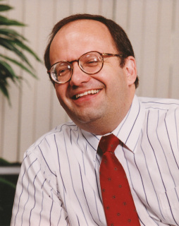

The workshop's primary goals were to foster further exploration of the intersection of AI and HCI, to stimulate conversation so that participants continue conversations and begin new collaborations outside of the workshop, and to further develop a community of researchers addressing the challenges of working in this space.
|
Daniel S. Weld: "Learning to Read: From Wikipedia to the Web" Daniel S. Weld is the Thomas J. Cable / WRF Professor of Computer Science and Engineering at the University of Washington. He earned a Ph.D. from the MIT Artificial Intelligence Lab in 1988, received a Presidential Young Investigator's award in 1989, an Office of Naval Research Young Investigator's award in 1990, was named AAAI Fellow in 1999, and deemed ACM Fellow in 2005. Dan is an area editor for the Journal of the ACM, on the editorial board of Artificial Intelligence, was a founding editor and member of the advisory board for the Journal of AI Research, was guest editor for Computational Intelligence and Artificial Intelligence, edited the AAAI report on the Role of Intelligent Systems in the National Information Infrastructure, and was Program Chair for AAAI-96. |
|
 |
Dan Olsen: "Interactive Machine Learning" Dan Olsen is a Professor and past Chair of Computer Science at Brigham Young University and where he currently directs the ICE project (Interactive Computing Everywhere). He is a recognized expert in HCI, novel UI and interaction techniques, and applying machine learning for non-expert users. Dan founded and directed the HCI Institute at CMU, is an ACM Fellow, recipient of a CHI Lifetime Achievement award, Father of UIST award. He is an extensively published, active, and visible member of most HCI conferences and committees. |
8:30 am |
Introductions |
9:00 am |
Learning to Read: From Wikipedia to the Web Keynote: Dan Weld |
10:00 am |
Coffee Break |
10:30 am |
Paper Session:
Supporting User Interaction in Flavor Sampling Trials
User Interface Goals, AI Opportunities
Using Interaction to Improve Intelligence: How Intelligent Systems Should Ask Users for Input |
11:45 am |
Lunch |
1:00 pm |
Interactive Machine Learning Keynote: Dan Olsen |
2:00 pm |
Paper Session:
Opportunities for User Involvement within Interface Personalization
Reasoning for Intelligent System-User Interactions with ERP Systems |
3:00 pm |
Coffee Break |
3:30 pm |
Paper Session:
User Initiated Learning for Adaptive Interfaces
CorrActive Learning: Learning from Noisy Data through Human Interaction
Designing User Interfaces for Hidden Markets |
4:45 pm |
Closing Remarks |
Submissions were reviewed by at least three members of a program committee comprised of experts from both AI and HCI. This committee included: